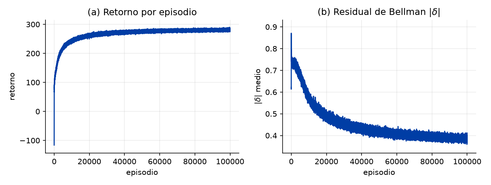
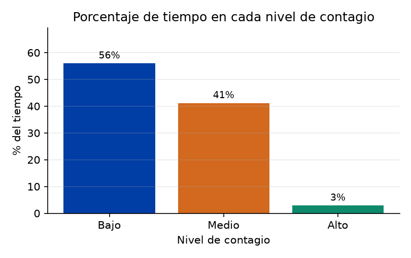
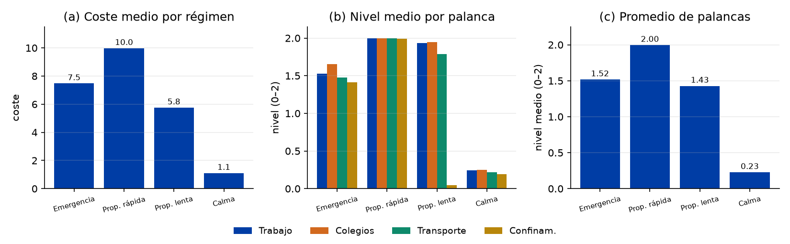
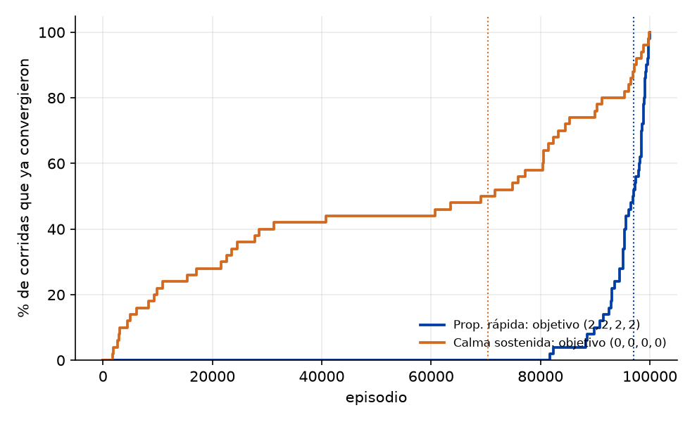

Fase 1
Aprender la política con Q-learning
El problema se plantea como un proceso de decisión: el agente observa el estado de la epidemia (contagio, hospital, restricciones, cumplimiento), elige qué medidas aplicar y recibe una señal que premia la salud y castiga el coste. Con Q-learning aprende, sobre un simulador de ecuaciones, una política de prevención primero: actúa fuerte cuando el contagio sube y desescala cuando la calma se sostiene.
La política aprendida frente a las de referencia




Fase 2
Construir el Mapa Cognitivo Difuso
Un FCM es un grafo causal: cada arista dice cuánto y en qué sentido una variable influye en otra. Lo difícil no es simularlo, sino de dónde sale su matriz de pesos. Aquí se construye desde tres fuentes independientes y se comparan entre sí:
Claude, Gemini y ChatGPT rellenan la matriz.
Descubrimiento causal (PC, FCI, GES) sobre las series por país.
Epidemiólogos y salud pública; es la referencia.
Los mapas construidos (matriz de pesos 11×11)
Cada celda es el peso causal de la fila (origen) sobre la columna (destino): en azul si lo aumenta, en rojo si lo reduce; más intenso, más fuerte. E1–E7 son variables de estado y A1–A4 las acciones. Pasa el ratón por una celda para ver el valor.
El hallazgo del capítulo: expertos y modelos de lenguaje recogen con claridad que las medidas frenan el contagio; la matriz de datos, a un día de horizonte, no captura el efecto del confinamiento (aunque sí el de colegios y transporte).
Fase 3
Integrar el FCM con el Q-learning
Se comparan cuatro versiones según cómo entra el FCM: V1 puro (sin FCM), V2 el FCM desempata al decidir, V3 el FCM modula la recompensa, y V4 las dos cosas. Y se repite con las tres fuentes del mapa, con las matrices a la misma escala.
Las 4 versiones según la fuente del FCM
El FCM no mejora el retorno…
porque el retorno es justo lo que el Q-learning ya optimiza. V3 (FCM en la recompensa) apenas cambia nada.
…pero cambia la prioridad
cuando entra en la decisión (V2/V4), la política se vuelve más protectora: menos contagio a cambio de más restricciones.
La fuente importa
los modelos de lenguaje sobreactúan (retorno negativo); los expertos equilibran; y los datos, a igual escala, resultan sorprendentemente eficientes.